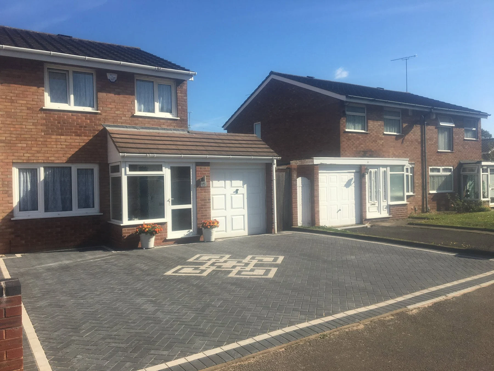

BIRMINGHAM · COLESHILL · SURROUNDING AREAS
Real homes.
Fresh possibilities.
Explore our supplied project photographs and videos.
Driveways & patiosFree quotationsGarden landscaping
CROFT PROJECTS
Made for real homes.
Explore the details.
Tap any photograph to view the complete image.
CROFT PROJECTS
More details.
More inspiration.
Tap any photograph to view the complete image.
IN MOTION
A closer look.
At the work.
Play either supplied project video using the controls below.
LET’S TALK ABOUT YOUR OUTDOOR SPACE
Your next project.
Starts here.
Tell us what needs doing, where the property is and how to reach you. Share the approximate size and the finish you have in mind.
Free quotation on request. Call or send your details to discuss the project and availability.